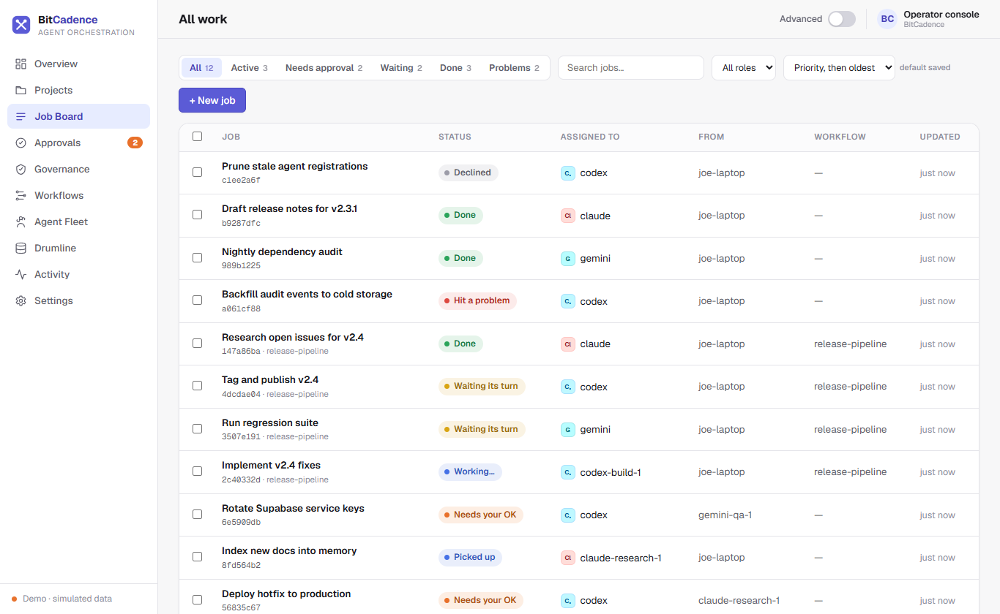
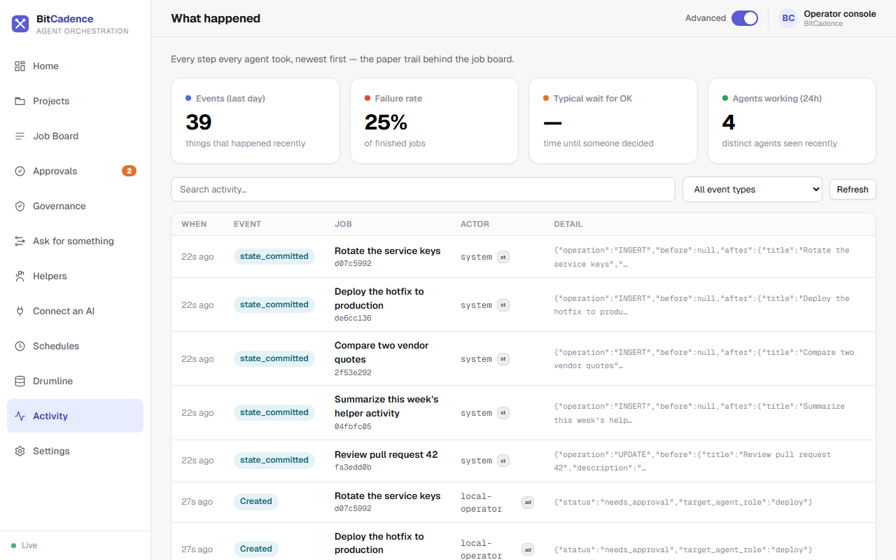
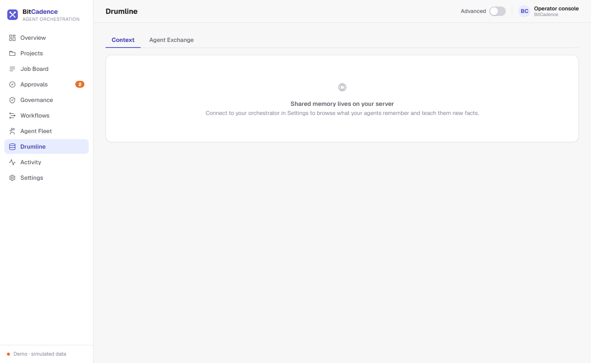
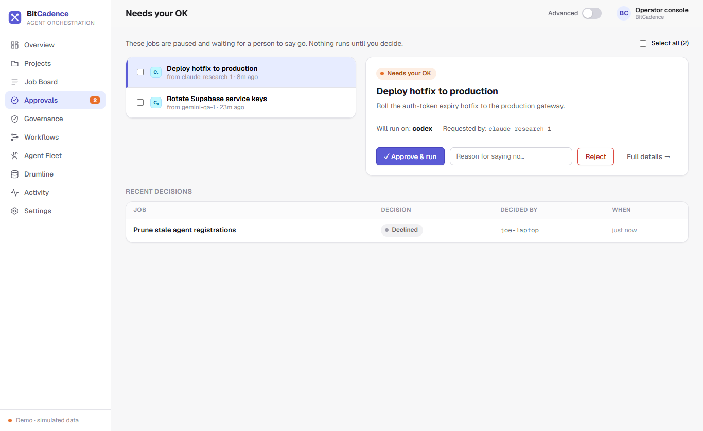
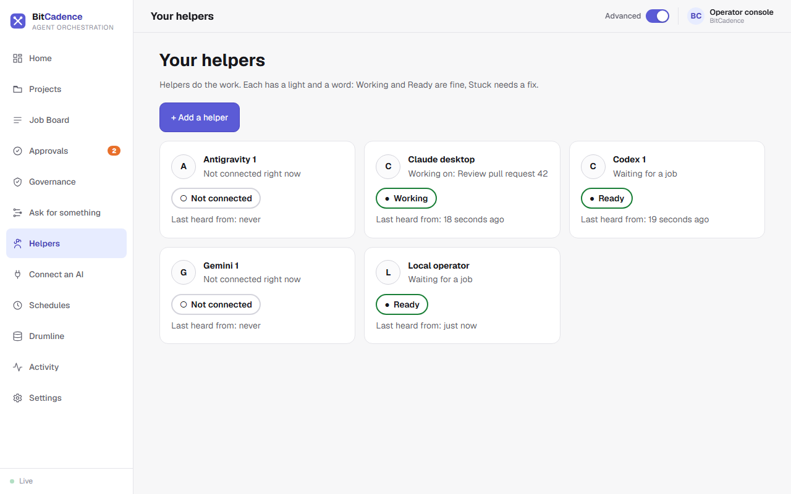
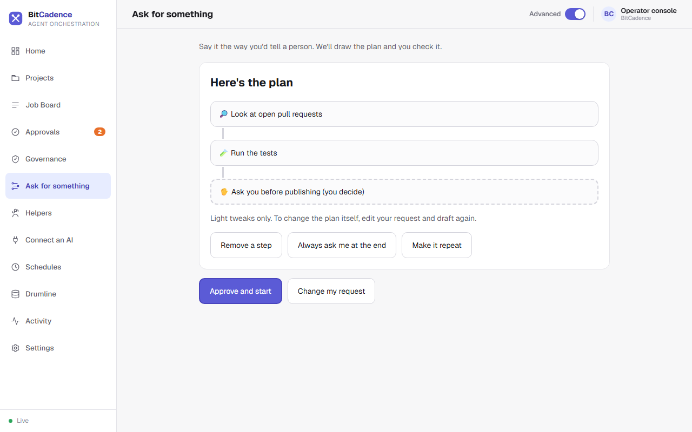

Claude, Codex, Gemini, Grok, or whatever model comes next, in the cloud or on your own machine. BitCadence leads them all as one band: shared memory, a clear score, and a human hand on every gate.
BitCadence is not built around four vendors. Claude, ChatGPT, Gemini and Grok are the first chairs, with Qwen, GLM, DeepSeek, Llama, Mistral, Kimi and more in the crowd. Add any model from any vendor, hosted or local, and the same cue reaches every player.
Hand a job to any agent and watch it move. Every message between players lands in an audit trail that fills in as the work happens. Nothing happens off the record.


Who asked, who answered, who approved. The trail is part of the product, not an export you hope you remembered to turn on.
Drumline is the shared memory. One agent learns something; another, on a different model and a different machine, recalls it the next morning. The band never starts from silence.

Score is the written arrangement: a plan becomes jobs, jobs become reviewed code, and nothing consequential moves without a person saying so.

Risky actions wait in a queue until a human approves them.

A health light and a confirm-first "Fix it". No jargon required.

Say what you want, read the drawn plan, approve once.
No cloud account needed. One command or one double-click.
Download the release and double-click install.bat, or use PowerShell.
iwr -useb https://bitcadence.ai/install.ps1 | iex
Clones, finds Python, builds the environment, walks you through setup.
curl -sSf https://bitcadence.ai/install.sh | bash
License. BitCadence Core is source-available under the Prosperity Public License 3.0.0: free for personal and noncommercial use. Businesses: see the commercial license.